| 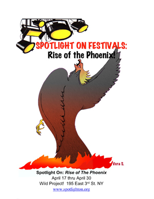
SPOTLIGHT ON FESTIVALS: RISE OF THE PHOENIX
April 17-30
It has been a decade since Spotlight On had its last solo festival but like the proverbial phoenix we announce the RISE OF THE PHOENIX Festival. As you know we produced as many as 2 to 4 festivals a year at various location all over the city including several in Times Square! For this new Rise of the Phoenix Festival we called upon participants from our early years in the 1990s through to the present. Indeed, this festival contains participants from our many Spotlight On Festivals as well as from our collaborations with Sage Theatre Company in 1996 [our first festival!], Planet Connections Festivity in 2009 and our Fresh Fruit Festival collaboration in 2012.
Frank Calo,
Executive Producer, Spotlight On Festivals, Inc.
www.spotlighton.org
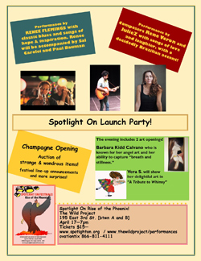Spotlight On Launch Party
Hosted by Frank Calo
90 minutes
Celebrate the return of Spotlight On Festivals at this fun filled launch party! Evening will include live performances, an auction of strange and wondrous items, cheese and champagne reception and not 1 but 2 art showings!
- Performances by Renee Flemings and Julie Zimmerman.
- Composer Rene Veron joins forces with singer/songwriter/actor JulieZ, a longstanding Spotlight-On Alumni. Together they celebrate this reunion Festival kickoff singing songs of love and laughter, with decidedly Brazilian accent. Don't miss them!
- Classic blues and Songs of hope & Inspiration with Renee Flemings accompanied by Sal Carolei and Paul Bauman.
- Vera S. will show her delightful art “A tribute to Whimsy”. If you have a spot in your heart for whimsy this is not to be missed.
- Barbara Kidd Calvano - From her experience as a dancer, choreographer, now a yogi, creates shapes, lines and forms of movement adding color from Nature, mostly plants, flowers and skies. She interested in capturing breath and stillness.
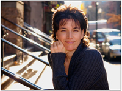A Sit Down with Spirit
With Rita Gigante
90 minutes
Using the backdrop of her book, The Godfather’s Daughter an Unlikely Story of Love, Healing and Redemption, Rita Gigante uses her psychic and mediumship abilities to bring messages from Spirit and her mom and dad using comedy as the vehicle.
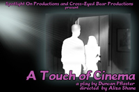A Touch of Cinema
By Duncan Pflaster
Director: Aliza Shane
90 minutes
Dina Kummerspeck, a filmmaker in a small country that isn't America, has been taken by the newly-fascist government and tortured for making supposedly seditious films. Now returned home under house arrest with an electric shackle on her ankle, she and her husband Tomas invite over their actor friends for a party, but unbeknownst to them, it's going to be a secret reading of Dina's new screenplay loosely based on her torture.
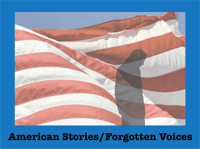American Stories/Forgotten Voices
Works by Paula Caplan, Cynthia Granville and Matthew Widman
120 minutes
An evening of theater and film that shares the voices of those who often are invisible and unheard but whose stories cry out to be told. STOP AND FRISK - Matthew Widman's play that viscerally portrays the often explosive human consequences of one of our nation’s most contentious policing tactics. IN MEMORIAM - Filmmaker Cynthia Granville's controversial examination of the collateral damage of war as seen through the eyes of a thirteen year old girl. IS ANYBODY LISTENING? - Paula Caplan's powerful documentary about a woman's journey to -- and across -- the soul-destroying chasm between veterans and others, a film about the power of love and connection.
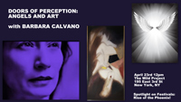Doors of Perception: Angels and Art w/ Barbara Calvano
60 minutes
"If the doors of perception were cleansed everything would appear to man as it is infinite." – William Blake
In this talk artist, angel intuitive and actor Barbara Calvano will share about how following your intuition you can create doors of opportunity for learning and growth. Finding refuge in making art she developed her psychic abilities and saved her life. She will share about how her series of paintings called ‘Tandra’, a peaceful meditative state, came about from channeled messages.
From living in Tokyo during the Vietnam War, moving to New York City in 1977, the summer of Sam after college, Barbara chronicles her life as an artist surviving through desperate times of alcoholism, homelessness and abusive relationships finding salvation in creativity and making art. Doors were opened again and again always guided by her intuition and angels. Join her for a rich exploration into a life of transformation that can happen when you open your heat to art and listening to your angels.
She will be giving some angel reading to audience members.
Ellen and Troy and Eloise
by Warren Paul Glover
&
The Scarab Club
by Michael F. Bruck
45 minutes
Ellen and Troy and Eloise: A lighthearted comedy where the boyfriend has been dumped but the (ex), future mother in law comes around and is not what is expected! The story takes us through the breakup and how the mother influences the couple. The Goal is to leave Australia and go back to London.
The Scarab Club: A wealthy, Detroit widower meets a charming widow selling her beloved painting to financially help her daughter's family in need.
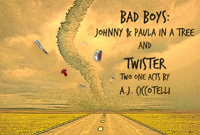Bad Boys: Johnny & Paula and a Twister
Two One Acts by A.J. Ciccotelli
65 minutes
TWISTER is a dark and edgy drama about a bar owner who is visited by a young woman who has known him in College, he is forced to confront his actions from his past while a huge twister bellows outside the window.
JOHNNY AND PAULA IN A TREE - Can a person really change? In this romantic comedy, NYC style, Johnny has to put his ‘bad boy ways’ aside for Paula, the woman he loves, but will he be able to?
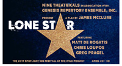Lone Star
By James McLure
Nine Theatricals and Genesis Rep
60 minutes
James McLure’s comedies about men coming back from war [Lone Star, Pvt. Wars] resonated a particular way in the late 70s when they premiered, today a piece like Lone Star about a macho-man trying to regain his life after serving in the military opens new discussion in the shadow of PTSD and the male image in the 21st Century. The interchange between brothers, Ray and Roy, elicit peals of laughter … and deep thoughts.
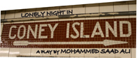A Lonely Night In Coney Island
by Mohammed Saad Ali
60 minutes
This performance of LONELY NIGHT... celebrates Genesis' 20 years as a leader in the independent theater community. Artists from its theatre company and education programs appear in this play. Guest speakers and refreshments will follow the presentation.
Genesis Repertory’s New Plays Workshop founded by Mary Elizabeth Micari, Jay Michaels, and Anthony King, a supporter of Manhattan Theatre Club, has developed and produced numerous works in New York at the Fringe and Midtown International Theatre festivals, the Jan Hus, Mazer, and 13th Street playhouses and numerous other venues. “Bare Stages,” sponsored by the 2004 Spotlight On Festival, gave opportunities to more than 30 students from Kingsborough Community College. Many playwrights have gone on to professional careers as well as winning awards. Genesis-developed plays have also been published by Samuel French. Award-winner Mohammad Saad Ali’s "Lonely Night..." which examines the new reality for Middle Eastern individuals today, marks the 50th new work from Genesis program to emerge into a professional production... and Genesis Repertory’s 101st production.
Omar, Fred, and Sam are hangin', smoking some weed. But in Trump's America, only one of them is a criminal. With the specter of prior offenses over his head, Arab-born Omar needs to be very careful.
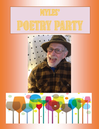Myles’ Poetry Party
Hosted by Myles Cohen
90 minutes
An afternoon of poetry and short tales. Authors can submit their poetry or short shorts to be read by professional reader [Madison Square Garden cat show among many professional engagements] Myles Cohen or they can chose to read their own works. Interactive and fun. Refreshments served. Contact spotlightonfest@msn.com with your submissions.
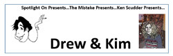The Mistake presents Ken Scudder presents “Drew & Kim”
Hosted by Ken Scudder
70 minutes
Ken Scudder, co-founder and head writer of the award-winning sketch comedy troupe The Mistake reflects on his work and friendship with Kim Chaskel and Andrew Martin, two early members of the troupe who have gone to the great sketch comedy troupe in the sky, through stories and video clips.
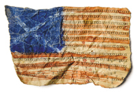States of Our Union
by Ed Valentine & Rob Reese
90 minutes
This evening of short plays explores the current state of our post-2016-election nation with vibrant words, stunning visuals…and occasional crocodile faces. NYC premieres by author/director Rob Reese and writer Ed Valentine (3 time Daytime Emmy winner, Sesame Street).
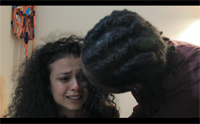Steven’s Alumni Melange
Hosted by Steven Thornburg
90 minutes
"Alumni Melange" is a mix of live performances and short films celebrating the work of Spotlight On Producer Steven Thornburg's students.
Films include work by New York residents Eddie Gomez and Mirsia Colorado and current New Brunswick High School Senior Joel Garrido. Joel's film, "Letter to God," is about a boy who corresponds with God via the U.S. Postal Service. In Eddie's film, "Heart of Gold," a young man finds himself distraught in the midst of his thoughts and memories. He seeks answers and finds himself while confronting his own personal battle. Mirsia writes and produces "Clouds," a hauntingly suspenseful drama directed by the Correa sisters, graduates of New Brunswick High School. Live performances of monologues and scenes will feature stand-up comedian and New Jersey native Christian Ayala. Original Spotlight On Alum Myles cohen will recite.
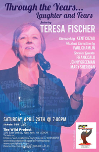Through The Years with Teresa Fischer
Directed by Kent Cozad
Musical Director: Paul Chamlin
60 minutes
Take a trip down memory lane cabaret style with Through The Years… Laughter and Tears. Spotlight On celebrates the many cabaret shows of Teresa Fischer with this retrospective performance featuring some audience favorites, special requests, some new gems and a special appearance (or two). Through The Years is directed by Kent Cozad with musical direction by the best one-man band in cabaret, Paul Chamlin. Guests include Jenny Greeman, Mary Sheridan and Frank Calo.
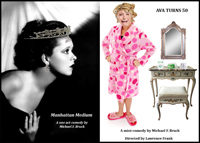Two Comedies by Michael F. Bruck
Manhattan Medium & Ava Turns 50
2 mini-comedies
Directors: Michael F. Bruck and Lawrence Frank
60 minutes
Two new comedies by Off-Off Broadway award winning playwright, Michael F. Bruck.
"Manhattan Medium" - A skeptical young man sees the Manhattan Medium and gets more than he originally bargained for.
Ava Turns 50 – 50 ain’t easy and it certainly isn’t for Ava or her husband
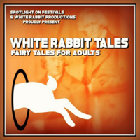White Rabbit Tales: Fairy Tales for Adults
Produced by White Rabbit Theatre Company
90 minutes
Journey through the stories of your youth – evil witches, beautiful princesses, charming princes – dressed up and revitalized for your decidedly grown-up self… And with enough twists and turns down the enchanted forest path to surprise you at every turn. Magic is only the beginning.
Authors include:
Maximillian Gill; Michael Hagins; Ramona Pula; Andrew Rothkin; Karin Diann Williams
|